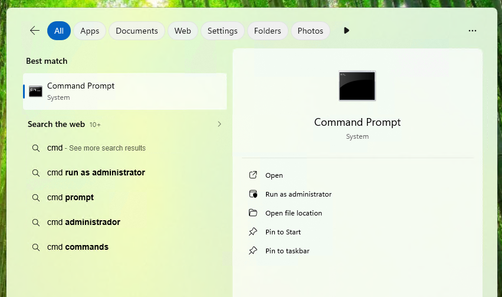
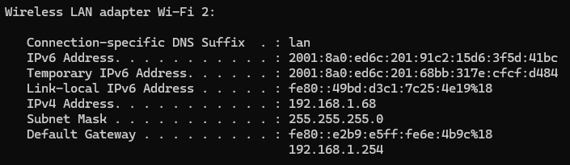
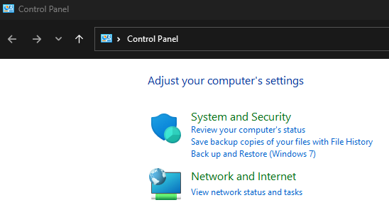
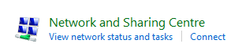
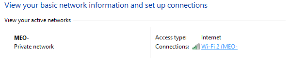
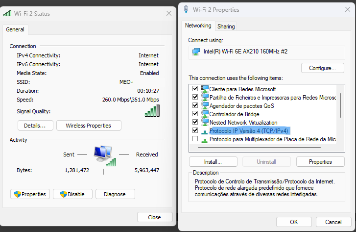
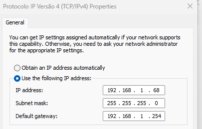
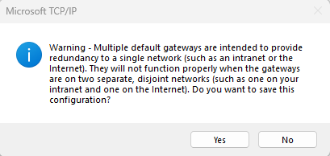
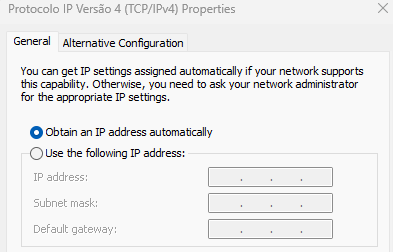

Static IP Guide (Work in Progress)
In order to create a server that others can connect to, you need a Static IP address. Without a Static IP, the IP address can change on its own, which would require you to change the server IP and patch the APK again.
This section of the guide will teach you how to change to a Static IP address.
Warning
The "Advanced Users" portion of the guide requires access to your home router. If you have never done this before, it is better to use a tool like Tailscale. Otherwise, you might mess up your internet settings. This warning will appear again before the section.
1 - Static IP via Windows Network Settings (Beginner Friendly)
The easiest way to set a static IP is in the Windows Network Settings. This avoids messing with your internet router and it's easy to fix if something doesn't work.
Info
This doesn't always work. Some ISPs only allow you to create a static IP address from within the router software. See the next section of the guide to learn how to do this.
1.1 - Open the Command Prompt
Open the Command Prompt by typing cmd in Windows Search.

1.2 - Getting your router LAN IP and your computer IP
Type ipconfig in the Command Prompt and press Enter.

Since I'm using a Wi-Fi connection, my IP address appears under Wireless LAN adapter Wi-Fi. If you are using a cable connection, it will appear under Ethernet adapter.
Note
Your IP address will be different from the one shown in the images. Use the IP address that appears in your Command Prompt.
Copy the IPv4 Address, Default Gateway and Subnet Mask IPs and paste them in notepad.
IPv4 Address: xxx.xxx.xxx.xxx #Computer IP
Default Gateway: xxx.xxx.xxx.xxx #Router LAN IP
Subnet Mask: xxx.xxx.xxx.xxx
1.3 - Changing your network settings
Open the Control Panel and select Network and Internet.

Select Network and Sharing Center.

Click on your Internet Connection.

Next click on Properties and double click the IPv4 protocol.

Copy and paste the respective IPs and press Ok.

If you get this message press Yes.

Note
As mentioned in the beginning, this might not work. If your internet connection stops working after you change these settings, simply revert them to the automatic settings.

Warning
The "Advanced Users" portion of the guide requires access to your home router. If you have never done this before, it is better to use a tool like Tailscale. Otherwise, you might mess up your internet settings.